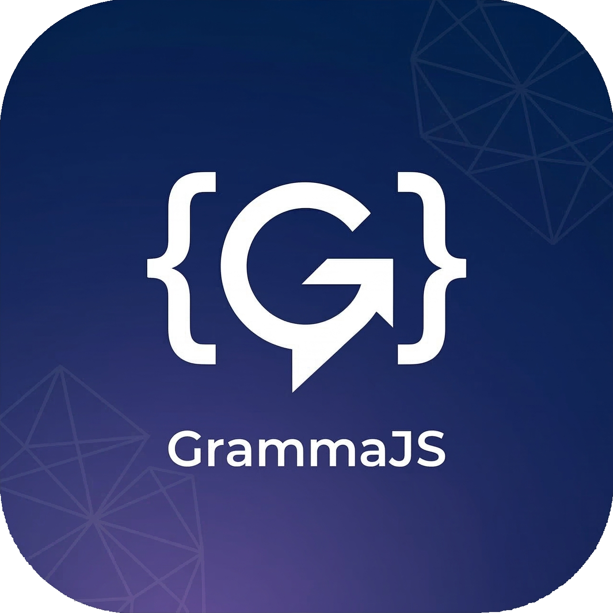

Traducteur expérimental
GrammaJS
Transformez du Français en Meniki avec GrammaJS grâce à un dictionnaire. Le Meniki ne se conjugue pas: on place efu devant le verbe pour le futur et emas pour le passé. Vous pouvez télécharger l'application pour l'utiliser et ce même hors connexion.